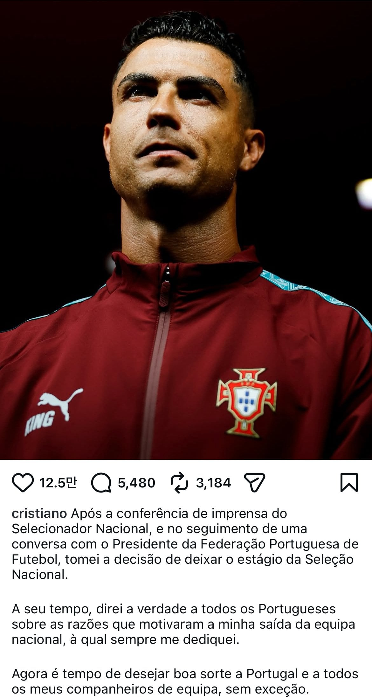

대표팀 기자회견 이후, 포르투갈 축협 회장과의 대화를 마친 뒤 대표팀 훈련 캠프를 떠나기로 결정했다.
때가 되면, 내가 항상 헌신해 온 포르투갈 대표팀을 떠나게 된 이유를 모든 포르투갈 사람들께 알릴 것이다.
이제 포르투갈과 모든 대표팀 동료들에게 행운을 빈다.
벤치 한번 앉혔다고 삐져서 국대 은퇴 선언함 ㅋㅋ

대표팀 기자회견 이후, 포르투갈 축협 회장과의 대화를 마친 뒤 대표팀 훈련 캠프를 떠나기로 결정했다.
때가 되면, 내가 항상 헌신해 온 포르투갈 대표팀을 떠나게 된 이유를 모든 포르투갈 사람들께 알릴 것이다.
이제 포르투갈과 모든 대표팀 동료들에게 행운을 빈다.
벤치 한번 앉혔다고 삐져서 국대 은퇴 선언함 ㅋㅋ
어휴 은퇴좀 진작하지
그놈의 1000골 욕심이 뭐라고..
지금 몇꼴째인데?
979골이라 거의 20골민 더 넣으면 될걸?
근데 문제는 지금 폼이 1대1에서도 공만 차면 다 날려먹는 수준이라 포르투갈 내에서도 빨리 은퇴시켜야 한다고 욕먹는 중
전무후무한 기록이라 욕심낼만해
사우디에서 채워야할듯
이렇게 쉽게 되는거였어? ㅋㅋㅋ
여론전 성공하면 또 국대 복귀할걸 ㅋㅋ
벤치에 앉아있는거 좋아하는거 아니였어?


과거에 좀 잘 들었던 칼이라고
요리사한테 대드는 격
진짜 너무 찌질해 ㅋㅋ
메시는 천골넘음?
한 100골쯤 더 넣어야함
진작에 했어야했음
그저 JOAT
저 정도 커리어, 위상이면 벤치에서 응원만 해줘도 선수들한테 큰 힘이 될텐데
되도 않는 노욕에 땡깡에 에휴 ㅋㅋ
[web발신] 너는나를존중해야한다나는발롱도르5개와수많은개인트로피를들어올렸으며...2016유로에서포르투갈을이끌고우승을차지했고동시에A매치역대최다득점자이다또한챔스역대최다득점자이자5번이나우승을차지한레알마드리드의상징이다또한36세의나이에도프리미어리그에서18골을기록하고챔스에서5경기연속골을기록하며내가세계최고임을증명해냈다은혜를모르는맨유보드진과팬들은내가맨유의골칫덩이라며쫒아냈지만내가세계최고이고내가팀보다위대하다는사실은바뀌지않는더내가사우디에간이유는메시에대한자격지심이아니라유럽에서이룰수있는모든것을이루었기에아시아를정복하기위해간것이지단지돈을위해서간것이아니다
2030 포르투갈-스페인 월드컵때 나가서 성적내서 메시 이기고 싶엉 + 통산 1000득점해서 메위호 하고 싶엉
그저 애새끼두
1000골 욕심에 호난사 하는 욕심두
발버둥해봤자 메시아래인 2인자 좆두
은퇴 아리갓두
풀타임 벤치마예프
조세동, 호두순, 호준영 (대한민국), 돈코예스 보지노프 (불가리아), 디에다 살라 (이집트), 돈코에만 하쿠야 (일본), 후장다오 (중국), 에너레 사드리게스 (에콰도르), 음부말구 미테쿠멍 (코트디부아르), 레이프 해 데용 (네덜란드), 디에가 조타 (포르투갈), 내 아드리아뉴 (브라질), 디에다 하자르 (벨기에), 돈코 에스피나(스페인), 돈코에타 바글레아 (아르헨티나), 조세 너드리게스 (콜롬비아), 은디예 '바쿠' 타르세후 깜빵예 (나이지리아), 조세 돈 무더스 (멕시코), 기두에 은가가 (토고), 브라운 존슨 (미국), 장파여르 (프랑스), 아다만 드러오래 (스페인), 페보리고 디에사(이탈리아), 트랜스젠더 안에싼다-애널두(잉글랜드), 박힘 뒤에흐(모로코) 노 쇼 (잉글랜드), 기필코 안가기 (이탈리아), 안가 코레아 (아르헨티나), 중국은 가누 (카메룬) 폰치아라 디 질라고 (이탈리아), 애페구 조타 (포르투갈), 아테리고 미야난추크 (우크라이나), 아일 팬 다이크 (네덜란드), 애때려송 (브라질), 엘 페노코 (멕시코), 아이 때렷 쑤엉 (베트남), 에를 조 페냐 (미국), 에리네 후리고 (콜롬비아), 손태림, 어 택 (대한민국), 스메시 (아르헨티나), 팰래 (브라질), 아이패오 (중국), 애팬베르크 (독일), 패태리고 발패는데 (우루과이) 애미리스 대리모 임시네 (나폴리), 후장 콜 (첼시), 아무도 안 사네 (바이에른 뮌헨), 애 때리도 그라드만 (아틀레티코 마드리드), 안락 사 (울버햄튼 원더러스), 친정팀 나몰라요비치 (레알 마드리드), 역오퍼 한다는비치 (인테르), 안산 데용 (바르셀로나), 고아티 나니 (스포르팅), 양심 판 다이크 (리버풀), 투어가서 안뛰네 (리옹), 오지 마르세유 (마르세유), 안 산 (대한민국)
임마는 젊었을때는 이성이 나쁘지 않았던거 같은데 왜 나이 먹을 수록 이러냐. 혹시 뭐 어... 어디 아프냐?
보통 나이먹을수록 유해지지 않나.
표독해지는 느낌임.
메시 아래 2인자라는게 용납이 안되나봄
갠적으로 호날두가 펠레, 마라도나보다는 위라고 생각하고,
40살 넘어서 뛰는선수가 애초에 자기가 최고라는 생각이 없다면 그렇게 하기 어렵다고 생각하는 편이라 이해가 가는편
메시, 호날두, 르브론이 그 과임
참고로 공식경기 기준 1000골에 도달한 선수는 없고 세간에 회자되는 펠레, 호마리우도 호날두, 메시보다 득점기록 후달림
나이를 마흔이나 처먹고도 저러는 거야?
메시가 먼저 국대 은퇴선언해서 은퇴하는거 같음ㅋㅋ
애새끼두 탐욕두 짜침두
찌질두
존니 추하다 추두야
날두 케이리그 오면 1000 골 빨리 가능할수도.
공식경기 1000골은 호날두, 메시 순으로 달성할거같고 전무후무한 기록이 되겠네
요즘 호날두 이새키 이름만 들어도 웃김 ㅋㅋㅋㅋ
그냥 무릎이 맛탱이가 갔음
유연성이 없어지니깐 움직임이 안됨
우리나라로 대입해보면 손흥민이 A매치 경기로 대표팀 뽑혀서 해외로 갔는데 감독이 선발약속 안지켰다고 삐져서(투입할수 없는 상황) 대표팀 무단으로 나가고 한국으로 돌아온뒤 은퇴선언한 꼴임 ㅋㅋㅋㅋ
진짜 축구 실력으로는 역대순위권에도 꼽힐만하고 한때지만 메시랑 견줬도르도 대단한건데 추하기는 ㅈㄴ게 추함 ㅋㅋㅋㅋㅋ
요즘 폼 보면 넣어야될골 2~3개씩 놓치는거보면
국대있을 실력은 아니긴함.
1천골 넣고 박수칠때 떠나는게 제일 이상적이지
애초에 공격수가 마흔넘고 저 자리있는게 말안되긴하지만